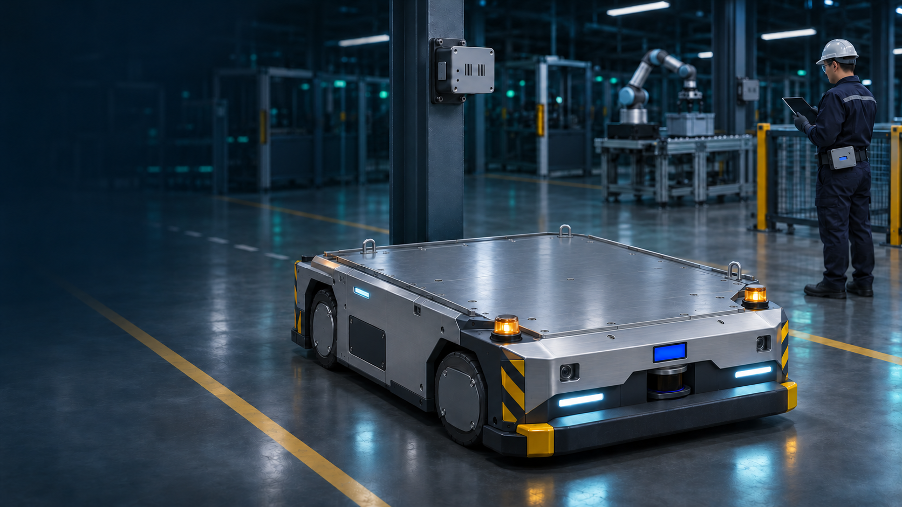

Spatial Intelligence
Platform for Future
Dark Factory Operations
UWB Localization · Safety · Automation
- Pipat Sassana
- Panpon Usatit
- Naruephon Boonmak
- Krittameth Klinkalong
Inside a Dark Factory
AGV follows the guide path
Conveyor → Cobot → AGV · RTLS for production and logistics · Rácz-Szabó et al. (2020)
Human Intervention
Technician approaches the service area
Safety requirements for driverless industrial trucks · ISO 3691-4:2023
Location-Awareness
Carton approaches the pickup bay
Compare the AGV and pickup bay coordinates in the same frame to confirm arrival
Why UWB?
LiDAR · Scans the area around the AGV
UWB · A1–A4 locate both tags on one map
Rack blocks the scan
Both tags share one coordinate frame
Simulation · UWB complements LiDAR. Obstructions and reflections can still distort ranges or interrupt updates. Barbieri et al. (2021) · Yuan et al. (2025)
Distance-based Safety
Prototype Control Simulation
UWB range→Proximity state→PWM / Relay / Buzzer
SAFE
AGV and conveyor run normally
TAG AGV / TAG Belt ↔ A1–A4
WHEEL PWM100%
CONVEYORRUNNING
BUZZEROFF
Related UWB research · Measuring time in traffic conflict zones · Fakhoury & Ismail (2023)
UWB Calibration
Offline range calibration · Before and after
Static range RMSE · P9 + P1 return17.71 → 16.15 cm−8.85%
Anchor A4 · Held-out10.36 → 2.99 cm−71.15%
5 / 8test point–anchor pairs improved
From UWB Tracking to a Digital Twin
Recorded UWB Positions
Two-tag lab capture · 29 Oct 2026
A1
A2
A3
A4
T1
T2
X (m)Y (m)
- T1
- (0.260, 1.419) m
- T2
- (0.529, 0.556) m
Recorded at 17:51:23 · DEGRADED · Both estimates used 3 of 4 anchors
Proposed Delta DIATwin Model
Illustrative Simulation
Approaching the pickup bay
- UWB X–Y and qualityCheck that the position is current
- Update the virtual AGVMap position to the pickup bay
- Test the handoffCheck the sequence before commissioning
UWB-to-DIATwin data connection is proposed · Delta DIATwin · ISO 23247-1:2021
From the Twin to the Production Floor
Proposed Delta Integration
AGV approaches the pickup bay
- AGV docksArrives at the pickup bay
- UWB confirms positionSystem reports the AGV in position
- Delta AS Series PLC + ME300PLC checks interlocks, then the drive runs the conveyor
- VTScadaDisplays and logs docking and conveyor status
Delta references · AS Series + ME300 conveyor case · VTScada Historian